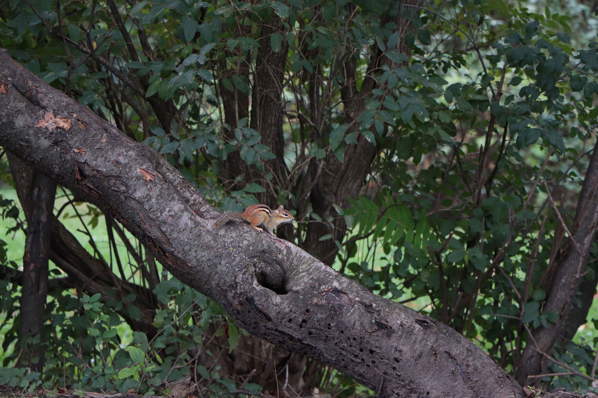
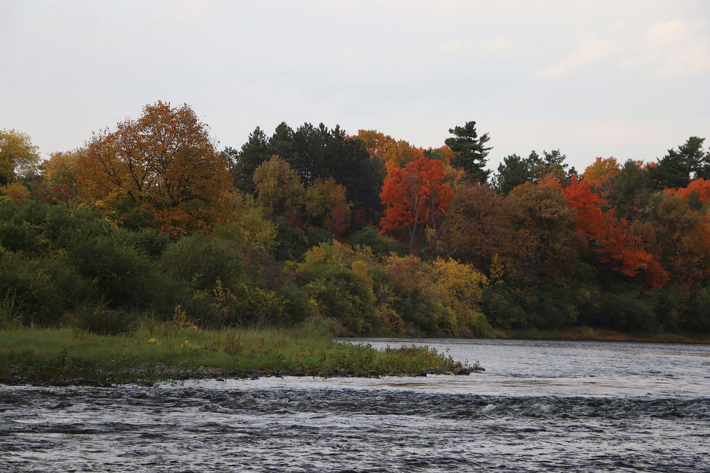
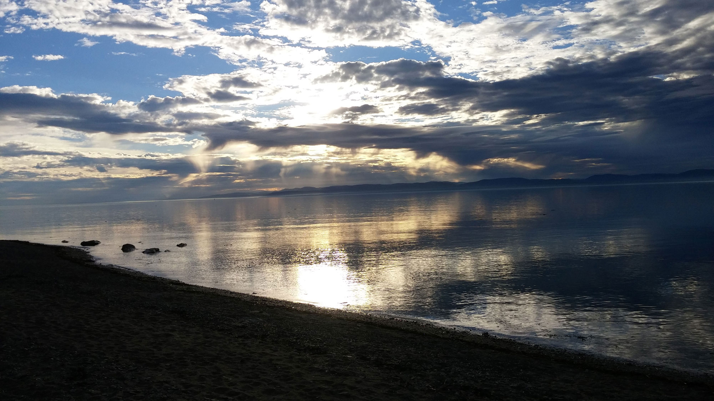

This photo was taken in Ottawa, Ontario, near Algonquin College in October 2018. Even with the fall approaching these flowers appeared relatively healthy. The cloudy weather was an advantage that day so the photo was not over exposed. I'm very happy with the composition of this photo as I was still experimenting with new techniques. There is even the smallest string of spider's web tied between two of the petals that initially escaped my eye.
This photo was taken in Ottawa, Ontario, near Hog's Back Falls. This was a chance encounter and I had to act quickly in order to capture this picture in time. By luck, the chipmunk stayed still just long enough before scurrying away. I had enough time to lay out this single shot before it disappeared.
This photo was taken in Ottawa, Ontario, at Hog's Back Falls. This particular shot was taken in an area further down from the main falls. Due to the odd weather in 2018 a lot of the trees in Ottawa didn't change colour. I was very happy to have found a spot where the trees did offer such various colours.
This photo was taken in Rivière-du-Loup, Quebec near the water front of the Saint Lawrence River in November 2015. Rivière-du-Loup is a very small town with an interesting and colourful landscape. Witnessing the sights there helped spike my interest in photography. I'm particularly fond of this shot as it was one of my first photographs that I was particularly proud of.